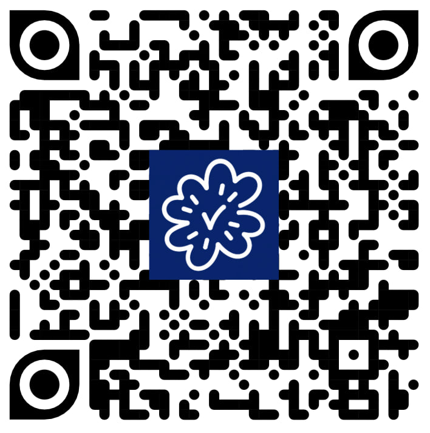
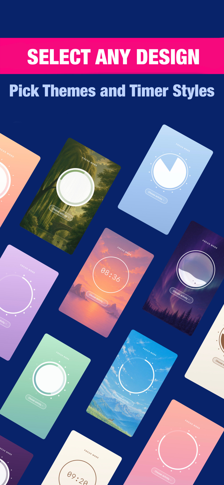
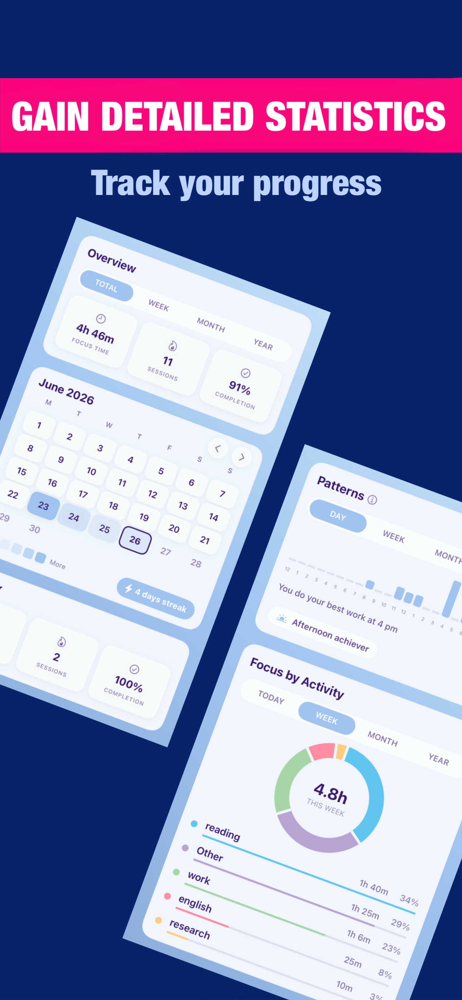
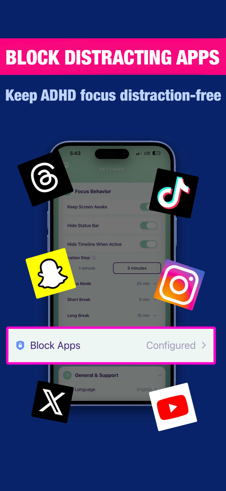
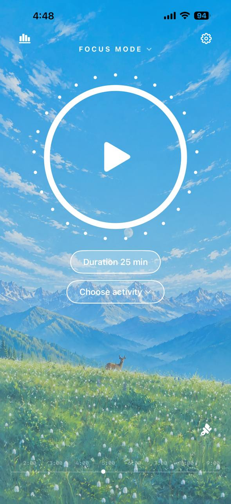
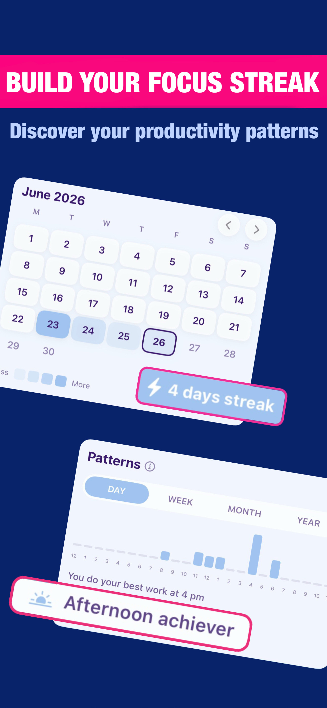
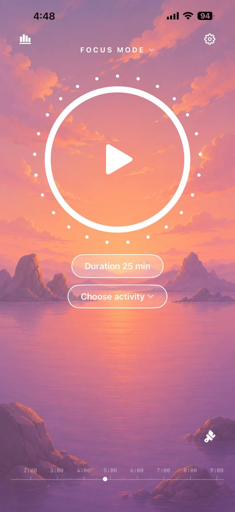
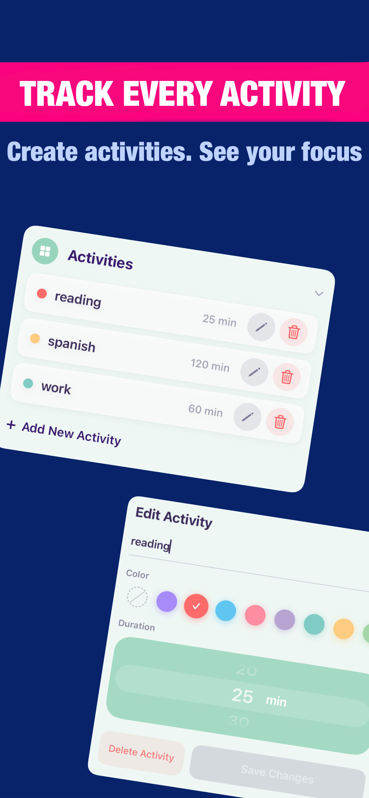

Flexible Focus Timer
Choose your focus and break duration. Use the classic Pomodoro method or create a schedule that fits your workflow.
A Beautiful Pomodoro Focus Timer for iPhone
Block distracting apps, track study and work sessions, create custom activities, and discover your most productive hours.








Choose your focus and break duration. Use the classic Pomodoro method or create a schedule that fits your workflow.
Block social media, games, and other distracting apps during your focus sessions.
Create activities for studying, work, reading, coding, or any other task. Save a separate color and duration for each one.
Choose different backgrounds, themes, and timer designs. Create a focus space that feels right for you.
See how much time you spend on each activity. Track your progress by day, week, month, and year.
Find the hours and days when you focus best. Use your real data to plan tasks more effectively.
Track completed sessions, productive days, and streaks. See your progress grow over time.
Use the focus timer, app blocker, custom activities, themes, streaks, and detailed productivity statistics without a subscription.
Stay focused while studying, preparing for exams, reading, or completing assignments.
Create clear work sessions, reduce distractions, and spend more time on your most important tasks.
Protect time for writing, designing, coding, and other work that requires deep concentration.
Block distracting apps and create simple boundaries between focus time and rest.
Track your progress, understand your productivity patterns, and build a more consistent daily routine.
The Pomodoro Technique is a time management method that uses a timer to break work into intervals, typically 25 minutes, separated by short breaks. Immerse: Pomodoro Focus Timer helps you customize these intervals to match your workflow.
Short Breaks are quick 5-minute rests between focus sessions. Long Breaks are longer 15-minute breaks that occur after a set number of focus sessions, configurable in Settings, Focus Behavior, Long Break After.
Open Settings, then Focus Behavior. You can customize Focus Mode duration, Short Break, Long Break, and set Duration Step to control time increments.
When enabled, Immerse: Pomodoro Focus Timer prevents your device from going to sleep during an active focus session. This keeps the timer visible on your screen.
Activities let you categorize your focus sessions, such as Coding, Writing, or Study. Create activities in Settings, Activities, then select one before starting a timer. Your statistics will track time spent on each activity.
All your focus sessions, statistics, and settings are stored locally on your device in Immerse: Pomodoro Focus Timer's private storage. Your data never leaves your device and is not uploaded to any server. See our Privacy Policy for more details.
Open Settings, Appearance, Background. Choose from gradient themes like Blush, Sky, Peach, Matcha, Lavender, Milk, Twilight, or photo backgrounds like Sunset, Mountains, Forest, and Aurora.
Immerse: Pomodoro Focus Timer offers 5 timer styles in Settings, Appearance, Timer Display:
Open Settings, General & Support, Notifications and toggle it on. If this is your first time, iOS will ask for permission. If you previously denied permission, the toggle will open iOS Settings where you can enable notifications for Immerse: Pomodoro Focus Timer.